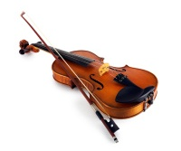

Ջութակ
 Դժվար է մեր ժամանակներում հանդիպել մի մարդու, ով գաղափար չունի ջութակի `խոնարհված ընտանիքին պատկանող հիմնական երաժշտական գործիքի մասին: Olinութակը մեր ժամանակների ամենաազնվական, տարածված և կատարյալ երաժշտական գործիքներից մեկն է: Երաժշտության թագուհի. Այսպես է բնութագրվում իր գեղեցկությամբ զարմանալի այս երաժշտական գործիքը: Կատարման հսկայական հնարավորությունները, հարստությունը, արտահայտիչությունն ու տեմբրերի ջերմությունը ապահովում էին այս գործիքը իր հարազատների հետ միասին ՝ ալտ, թավջութակ և կոնտրաբաս, առաջատար դիրքեր սիմֆոնիկ նվագախմբերում, տարբեր համույթներում, մենակատար կատարումներում և ժողովրդական երաժշտական կյանքում:
Ջութակի պատմություն
Խոնարհված երաժշտական գործիքների պատմության վերաբերյալ տեղեկությունները շատ հարուստ և մանրամասն չեն, ինչպես կցանկանայինք: Հնդկաստանի, Իրանի և այլ նահանգների պատմությունից կարող եք տեղեկություններ հավաքել ավելի քան երկու հազարամյակ առաջ այդ գործիքների գոյության մասին: Կարելի է ենթադրել, որ առաջին աղեղնավոր գործիքները հայտնվել են հենց արևելյան ժողովուրդների շրջանում:
Ըստ ամենայնի, հնագույն աղեղնավոր նվագարանը ռավանոստրոնն էր: Այն բաղկացած էր թութից պատրաստված դատարկ բալոնից, որի մի կողմը ծածկված էր լայնածավալ ջրային բոյի մաշկով: Այս մարմնին ամրացված փայտիկը ծառայում է որպես պարանոց և պարանոց, իսկ փայտի վերին ծայրում անցքեր են արվում երկու կարգաբերող ցցերի համար: Լարերը պատրաստվում էին գազելի աղիքներից, իսկ աղեղը պատրաստված էր բամբուկե փայտից, թեքվել էր աղեղի մեջ և հագեցած էր մազերով: Ravanostron- ի ձայնը թույլ է, ձանձրալի, բայց հաճելի: Ըստ ավանդության ՝ Ռավանոստրոնը հորինել է eyեյլոնի արքան ՝ Ռավանան, մ.թ.ա. 5000 տարի: ե. Ռավանոստրոնը գոյատևել է մինչ օրս Բուդդայի թափառող քահանաների շրջանում:
Ռեբաբը կարելի է վերագրել հետագա հնագույն աղեղնավոր գործիքներին: Ռեբաբը (ռեբեբ, ռեբեկ) ուներ չորս փայտե ափսեներից կազմված մարմին ՝ կազմելով շրջանակ, որի վրա ձգվում էր մագաղաթի երկու կտոր ՝ կազմելով ստորին և վերին ձայնային տախտակները: Պարանոցը մխոցի տեսքով է և գլխի հետ կազմում է մի ամբողջություն: Ոտքը երկաթյա ձող է, որը կցված է պարանոցին, որը անցնում է ամբողջ գործիքի միջով և նվագելիս ծառայում է որպես հենարան: 9-րդ դարում միջնադարի երաժշտության մասին կոմպոզիցիաներում նշվում է քնարը, աղեղնավոր երաժշտական գործիքը ՝ միալար նվագարան ՝ կանգնածով, ենթակրիչով և ձողաձև անցքերով փայտե տախտակամածի մեջ (սա քնար չէ որը սովորաբար պատկերված է հին հունական դիցաբանության մեջ):
Հին ջութակը XIII-XIV դարերում հայտնվեց աղեղնավոր երաժշտական գործիքների մեկ այլ տեսակ `ֆիդելը, որը ալտի նախատիպն էր: Ֆիդելի կորպուսը կառուցվել է այլ սկզբունքով, քան քնարը: Մարմինը բաղկացած էր երկարացված շրջանակից, վերևի և ներքևի տախտակամածից: Վերին տախտակամածը կտրվածքներ ուներ: Այս ձևով ֆիդելի մարմինը կիթառի տեսք ուներ, իսկ ավելի ուշ անցավ ալտի ձևին:
Արդեն XIV դարում ի հայտ եկան ալտի տեսակների մեծ քանակություն, իսկ XVII դարում դրանք արդեն տասնյակ էին: Առավել լայնորեն օգտագործվում են հետևյալները. Շատ մեծ ալտ - բաս; մեծ բաս վիոլա դե գամբա (գամբամի (իտալ. gamba - ոտք) կոչվում էին բոլոր գործիքները, որոնք խաղի ընթացքում պահվում էին ծնկների արանքում, իսկ վիոլա դե բրաչո («ձեռք» բառից) կոչվում էին, ի տարբերություն գամբաների, բոլոր գործիքները, որոնք խաղի ընթացքում դրանք պահվում էին նրանց ձեռքում:); փոքր բաս վիոլա դե գամբա թյունինգի հինգ տարբերակում. tenor viola և alto viola de gamba, յուրաքանչյուրը երկու պարամետրերով. չի կարող viola de gamba- ն չորս տարբերակով; վիոլա տիղմը հինգ տարբերակով; ալտ դե բրաչիոն չորս տարբերակով: Olութակների այս տեսակներից հետագայում զարգացան կոնտրաբասը, թավջութակը, ալտն ու ջութակը ՝ ջութակը: Վերջին գործիքը ստեղծվել է ալտից ՝ ծավալի նվազման միջոցով (ջութակը «ալտ» բառի փոքրանում է):
Olութակ - ջութակ կամ իսկական եռակի ջութակ գոյություն ունի 16-րդ դարի առաջին կեսից: Նրա հայրենիքը Հյուսիսային Իտալիան է: Knowութակի գյուտը, ինչպես մեզ հայտնի է, վերագրվում է գերմանական ծագմամբ իտալացի վարպետին, ով բնակվում էր Բոլոնիայում, Գասպար Դուիֆոպրուգգարին (1467-1530), ով նախ ջութակներ ու լուտիներ էր պատրաստում: Ամենահին ջութակը, որը պատրաստվել է 1510 թվականին Գասպար Դուիֆոպրուգգարի կողմից և պահպանվել մինչ օրս, պահվում է Նիդերջեի հավաքածուում և Աախեն քաղաքում: Այս ջութակը պատրաստվել է Ֆրանց I թագավորի համար:
Edիածանման գործիքները հետագայում մշակվել են 16-17-րդ դարերում Հյուսիսային Իտալիայի Բրեշիա և Կրեմոնա քաղաքներում: Բրեշիայի ամենաակնառու վարպետներն էին Գասպար Բերտոլոտին (1540-1609) և Պաոլո Մագինին, Կրեմոնայում ՝ Նիկոլո Ամատին, Անտոնիո Ստրադիվարին և useուզեպպե Գուարների դել Գեսուն: Վիոլան այդ ժամանակ ամենատարածված աղեղնավոր գործիքներն էին, ուստի Բերտոլոտին և Մագինին պատրաստում էին հիմնականում այս գործիքները: Բայց հայտնի են նաեւ նրանց ստեղծագործության ջութակները: Մասնավորապես բարձր են գնահատվում Պաոլո Մագինիի ջութակները, որոնք նրան հայտնի են դարձրել որպես Բրեշյան դպրոցի մեծագույն վարպետ: Մագինիի ջութակները նվագում էին Բերիոն, Վիյուստեմպսը, Մարթոն և այլ հայտնի ջութակահարներ:
Անդրեա Ամատին (1535-1612) եղել է Կրեմոնա ջութակ ստեղծողների դպրոցի հիմնադիրը: Սակայն մեր օրերում նրա ստեղծագործության ջութակները հազվադեպ են հանդիպում: Ամատիի որդիները ՝ Անտոնիոն (1555-1640) և Jerերոնին (1556-1630), աշխատում էին իրենց հոր մոդելի վրա, բայց նրանց ջութակների ձևերն արդեն վկայում էին զգալի առաջընթացի մասին: Jerերոմի որդին `Նիկոլոլոն (1596-1684) ավարտում է Ամատի ընտանիքի վարպետների ընտանիքը, ովքեր մեկուկես դար վայելում էին համաշխարհային հռչակ: Նրանք իրավամբ համարվում են Կրեմոնայի դպրոցի հիմնադիրներ, բայց նրանց վիճակված չէր ջութակը հասցնել բարձրագույն կատարելության: Դա արվել է բոլոր ժամանակների մեծագույն վարպետի ՝ Նիկոլո Ամատիի ուսանող Անտոնիո Ստրադիվարիի կողմից, որի անունը հայտնի է ոչ միայն կրթված ցանկացած երաժիշտի, այլև ընդհանրապես մշակութային ցանկացած անձի:
Անտոնիո Ստրադիվարին ծնվել է 1644 թվականին և ըստ որոշ տեղեկությունների կարելի է դատել, որ արդեն 13 տարեկան հասակում նա սկսել է ջութակ սովորել: 1667 թվականին Ստրադիվարին ավարտեց ուսումը Ամատիի մոտ և այդ ժամանակներից սկսեց ինքնուրույն պատրաստել աղեղնավոր գործիքներ: Ստրադիվարիի առաջին անկախ գործերը, չնայած դրանք կրում էին ուսուցչի ազդեցության հստակ նշաններ, բայց արդեն տարբերվում էին ձևերի շնորհքով և հզոր ձայնով: Ստեղծագործական հետազոտությունների ժամանակահատվածը, որի ընթացքում Ստրադիվարին մշակեց իր սեփական մոդելը, տևեց մոտ 30 տարի: Չնայած այն հանգամանքին, որ մինչ իր երկար (93 տարի) կյանքի ավարտը նա մնում էր փորձարար, 1695 թվականից ի վեր նրա մշակած մոդելներից էական շեղումներ չեն եղել:
Ստրադիվարին ստեղծեց ջութակի իդեալը ՝ թե՛ ձևով, թե՛ ձայնի որակով: Ստրադիվարին նաև պատիվ ունի ավարտել թավջութակի ձևավորումը այն ձևով, որով այն հասել է մեր օրերին:
Անտոնիո Ստրադիվարիի ամեն ունակ աշակերտը Կարլո Բերգոնցին էր (1686-1747), որի ջութակները շատ ընդհանրություններ ունեն ուսուցչի գործիքների հետ: Ստրադիվարիի ժամանակակիցներից մեկը և նրա մրցակիցը ջութակ պատրաստողների տոհմի հիմնադիր Անդրեա Գվարներիի թոռն էր ՝ Բարտոլոմեո useուզեպպե Գուարներին: Useուզեպպե Գուարներին ստացավ «դել Գեսու» մականունը, քանի որ նա իր գործիքների պիտակների վրա կրծքանշան էր դնում ՝ հիշեցնելով ճիզվիտների վանական կարգի խորհրդանիշը: Գուարներիի կյանքի մասին գրեթե տեղեկություններ չկան: Երկար ժամանակ լեգենդ էր տարածվում, որ նա իր վերջին տարիներն անց է կացրել բանտում և այնտեղ ջութակներ է պատրաստել, և բանտապահը մեծ շահույթով վաճառել է այդ գործիքները: Այնուամենայնիվ, այս լեգենդի արժանահավատությունը խիստ կասկածելի է:
Guarneri գործիքները տարբերվում են Stradivari ջութակներից ավելի ձայնային տախտակով և լաքապատվում են ստվերների բազմազանությամբ ՝ ոսկե դեղինից մինչև բալ: Viութակների ձայնը ուժեղ է և մեղմ, հատկապես, երբ նվագում են մեծ համերգասրահներում: Այս առումով, Guarneri գործիքները հատկապես տարածված էին 19-րդ դարում, երբ ջութակները դուրս էին գալիս նեղ կամերային սենյակների սահմաններից:
17-18-րդ դարերում Իտալիայում կային նաև ջութակի այլ դպրոցներ ՝ վենետիկյան, միլանյան, նեապոլիտանական, ֆլորենցիական և այլն: Այնուամենայնիվ, այս դպրոցները ձեռք չբերեցին նույն կարևորությունը, ինչ Կրեմոնան և Բրեշիան:
Այլ երկրներ նույնպես նպաստեցին ջութակի հմտությունների զարգացմանը: Olinութակը Ֆրանսիայում հայտնվեց ավելի ուշ, քան Իտալիայում: Ֆրանսիայում ջութակ արտադրող առաջիններից մեկը Կասպար Թիֆենբրուկերն էր (1553-1571), որը հայտնի է նաև որպես Դիոնֆոպրուգգար, Լիոնի բնակիչ: Սակայն նրա ջութակները չեն պահպանվել մինչ օրս: Ներկայումս հայտնի են միայն Թիֆենբրուկերի պատրաստած ալտերը:
Նիկոլա Լուպեոն (1758-1824) համարվում է ֆրանսիացի մի շարք այլ վարպետների ամենաակնառուն: Լուպոն սերունդներից ջութակներ պատրաստող ընտանիքից է: Նա նախ աշխատել է Օռլեանում, ապա ՝ Փարիզում: Իր աշխատանքներում Լուպոն ապավինում էր Ստրադիվարիուսի ջութակների մոդելներին: Այնուամենայնիվ, նրա գործիքները, չնայած առանձնանում էին բարձր ձայնով, տեմբրերի հարստությամբ զիջում էին իտալական նմուշներին:
19-րդ դարի ֆրանսիացի վարպետներից worldwideան Բապտիստ Վիյոմը (1798-1875) շահեց համաշխարհային հռչակ: 1819 թ.-ին Վիյոմը ժամանեց Փարիզ և այնտեղ նա սկսեց գործիքներ պատրաստել ջութակագործ Ֆրանսուա forանոտի համար, ով առանց անկյունների ջութակի ինքնատիպ մոդել կառուցեց և ժամանակավորապես մեծ հաջողություն ունեցավ իր նորարարությամբ: Բարձր կրթությամբ Jeannot Vuillaume- ի ղեկավարությամբ նա ինտենսիվորեն ուսումնասիրում է իտալացի հայտնի վարպետների նվագարանների նմուշները, այնուհետև ինտենսիվորեն պատճենում է Guarneri- ի, Stradivari- ի մոդելները և այնքան հմտորեն, որ նրա ստեղծագործությունները սխալվում են բնօրինակների հետ: Վյոլումը հնագույն գործիքների ամենամեծ գիտակն էր, որի ահռելի քանակը անցնում էր նրա ձեռքերով: Նա աներևակայելի ընդունակ էր աշխատելու. Նա պատրաստեց շուրջ 3000 գործիք: Վյոլումը աղեղների անգերազանցելի վարպետ էր, նրա թավջութակները գերազանց համերգային որակների էին:
Տիրոլյան ջութակները լավ հայտնի են: Տիրոլը Ալպերում փոքր լեռնային երկիր է, որի բնակիչները երկար ժամանակ զբաղվել են փայտի փորագրությամբ և երաժշտական գործիքներ պատրաստելով: Viութակ արտադրող խոշորագույնը, ով 17-րդ դարում ծայրահեղ ժողովրդականություն էր վայելում Արևմտյան Եվրոպայում, Յակոբ Շտայներն էր (1621-1683): Շտայների ջութակները նման էին իրար ե Niccolò Amati- ի գործիքների վրա, բայց տարբերվում էին տախտակամածների բարձր պահոցներով. Շտայների նվագարանների ձայնը ունի մեղմ, քնարական բնույթ: Կար ժամանակ, երբ Ստայների ջութակները մի քանի անգամ ավելի թանկ էին գնահատվում, քան Ստրադիվարիինը: Ներկայումս Շտայների աշխատանքի իրական գործիքները շատ քիչ են: Inութակները, որոնք այժմ հանդիպում են Շտայների պիտակներով, ոչ այլ ինչ են, քան կեղծիք, որով զբաղվում էին Տիրոլյան վարպետները ՝ Շտայների հետեւորդները:
18-րդ դարի վերջին և 19-րդ դարի առաջին կեսին աշխատած Բախմանը, Հունգերը, Էռնստը և մի քանի այլ մարդիկ մեծ հաջողությունների հասան Stradivarius- ի մոդելներին հետևող գերմանացի վարպետների շրջանում:
Իտալացի վարպետների աշխատանքները Անգլիայում ճանաչվել և գնահատվել են շատ ավելի ուշ: Անգլիացի վարպետները պատճենեցին Շտայներ, իսկ ավելի ուշ ՝ Մագինի, Ամատի և Ստրադիվարի ջութակները: Հայտնի բրիտանացի վարպետներ Բարաք Նորման (1678-1740), Ռիչարդ Դյուք (աշխատել է 1750-1780), Bedjamen Bank (1727-1795): Դյուկի հետևորդը Դոդն էր, որի ուշագրավ աղեղները լայնորեն հայտնի դարձան:
Ամենահայտնի հոլանդացին Գենբրիկ Յակոբեն է, ով աշխատել է Ամստերդամում 1690-1712 թվականներին ՝ Նիկոլո Ամատիի ուսանող: Obեյկոբսի ջութակների մեծ մասը վաղուց պիտակավորված է եղել Amati անունով և վաճառվում է որպես այս վարպետի իսկական գործիքներ:
16-րդ դարում Լեհաստանում աշխատում էր նշանավոր վարպետ Մարտինի Գրոբլիչը (1555-1610), հավանաբար Մագինիի ուսանող, ով հետևում էր նրա մոդելներին: Գրոբլիչի գործիքները գերազանց են և այժմ լիարժեք համերգային գործիքներ են: Բացի ջութակներից, Գրոբլիչը պատրաստել է բազմաթիվ ալտեր, որոնք համաշխարհային նշանակության գլուխգործոցներ են `իրենց տեխնիկայով, նրբագեղ ձևերով և հիանալի ձայնով: Լեհաստանում ջութակ արտադրողների այլ հայտնի արտադրողների թվում են Յան Դակկվարթ և Գրոբլիչ Կրտսեր (18-րդ դարի առաջին կես), Միկոլա Սավիցկի (1792-1850), Կպուչինսկի (19-րդ դարավերջ - 20-րդ դարասկզբներ) անունները:
Olinութակի պատրաստումը Չեխոսլովակիայում տարածված մասնագիտություն է: 16-րդ դարի վերջին ջութակ արտադրողները Բոհեմիա եկան Տիրոլից և Բավարիայից: Չեխի ամենատաղանդավոր արհեստավորներն են ՝ Տիրոլից ծնված Թոմաշ Էդլինգերը (1662-1729), Ուլրիկ Էբերլեն (1699-1768), որը 1725-ին հիմնեց իր արտադրամասը Պրահայում: Berամանակին Էբերլեն համարվում էր Կենտրոնական Եվրոպայի լավագույն վարպետ; Կասպար Շտրնադը (1759-1823) աշխատել է Ստրադիվարիի մոդելների վրա: Նրա ջութակները հայտնի են Չեխոսլովակիայի սահմաններից շատ հեռու: XX դարի Պրահայի վարպետներից: կարելի է անվանել Ֆրանց Սփիդլենին (1867-1916), նրա որդուն `Օտկար Սփիեդլենին (1895-1938), տաղանդավոր բարձր կրթությամբ արհեստավոր և գործիքավորող:
Իստրիական ջութակները Ռուսաստանում
Աղեղնավոր գործիքները Ռուսաստանում հայտնվեցին, ըստ երեւույթին, շատ հեռավոր ժամանակներում: 11-րդ դարում նման գործիքների գոյության փաստը հաստատվում է Կիևի Սոֆիայի տաճարի որմնանկարչության պատկերով ՝ երաժշտի գործչի պատկերով, որը ուսին ձեռքին ջութակի պես խոնարհված գործիք ունի: Ռուսաստանում ջութակի մասին առաջին գրական հիշատակումը եղել է 1596 թ. ՝ Լոուրենս izիզանիայի բառարանում, և մեզ հասած ամենավաղ պատկերներից մեկը ՝ 1692 թ., Կարիոն Իսթոմինի այբբենարանում: Կարելի է ենթադրել, որ ջութակն, արդեն դասական տիպին մոտ ձևով, հայտնվել է Ռուսաստանում 16-րդ դարի սկզբին: Որոշ գրական աղբյուրներ ենթադրում են, որ ջութակի նախորդը մի տեսակ աղեղնավոր գործիք էր, որը կոչվում էր «սունա»: Նման գործիք օգտագործվում էր ժողովրդական կատարողական պրակտիկայում մինչև 19-րդ դարի երկրորդ կեսը:
Սունան ունի ջութակի մարմին և իր կառուցվածքով այն կարող է վերագրվել ջութակի նախորդին ՝ խոնարհված քնարին: Բայց եթե քնարը տասնմեկ կամ ավելի լար ուներ, ապա սունան, ինչպես ջութակը, ուներ ընդամենը չորս լար: Աղեղնավոր գործիքներն առավել տարածված են Ռուսաստանի հարավում ՝ Մոլդովայում, Ուկրաինայում, ինչպես նաև Բելառուսում և Վոլգայի մարզում:
Չնայած ջութակները և ծիածանման այլ գործիքները տարածված էին մարդկանց մեջ, այդ գործիքները միայն բացառիկ դեպքերում էին թափանցում իշխող դասեր: Դա բացատրվում է եկեղեցու կողմից անընդհատ թշնամական վերաբերմունքով, որը այդ գործիքները դիտում էր որպես «սատանայական խաղեր»: Արմանալի չէ, որ 16-րդ և 17-րդ դարերի ռուսական ժողովրդական ջութակները, ինչպես և նրանց նախորդած այլ գործիքները, չեն պահպանվել մինչ օրս: Աղեղնավոր գործիքները լայն տարածում գտան միայն 18-րդ դարում:
18-րդ դարում հայտնվեցին ականավոր ռուս համերգային ջութակահարներ, այդ թվում ՝ նշանավոր նկարիչ և կոմպոզիտոր Իվան Էվստաֆիևիչ Խանդոշկինը: Միեւնույն ժամանակ հայտնվեցին աղեղնավոր գործիքներ պատրաստելու վարպետներ: Նախ ՝ սրանք Ռուսաստան հրավիրված օտարերկրացիներ են, իսկ հետո ՝ ռուսներ: 18-րդ և 19-րդ դարերի ռուս վարպետների շրջանում կային շատ ճորտեր, որոնք սպասարկում էին իրենց վարպետների նվագախմբերը: Նյութերը, որոնցից այս արհեստավորները պատրաստում էին իրենց գործիքները, տեղական էին: Վերին տախտակամածների համար զուգին զուգահեռ օգտագործվում էր սոճին: Ստորին տախտակամածները պատրաստելու համար օգտագործում էին թխկու, կեչի, եղնիկի, լորենի: Fորտ վարպետների աշխատանքների շարքում շատ հաջող գործիքներ կային, բայց այդ ռուս արհեստավորների անունները հիմնականում անհայտ էին:
Առաջին հայտնի ռուս տաղանդավոր արհեստավորներից մեկը կոմս Շերեմետևի ճորտ Իվան Անդրեևիչ Բատովն է (1767-1841): 17 տարեկան հասակում Բաթովին ուսանելու ուղարկեց մոսկովյան գործիքային վարպետ Վասիլի Վլադիմիրովը: Արդեն 1789 թ., Շերեմետևի ճորտ թատրոնի նահանգներում սովորելուց հետո, ցուցակագրվեց ջութակ արտադրող Իվան Բաթովը: 1812-ի Հայրենական պատերազմից առաջ Բաթովը լայնորեն հայտնի չէր: Նա նրան եկավ միայն 1814 թվականին, երբ Բաթովը Ալեքսանդր I- ին նվիրեց իր ստեղծագործության ջութակ և դրա համար 2000 ռուբլի մրցանակ ստացավ: 1822 թվականին Իվան Բատովը թավջութակ պատրաստեց, որը բարձր գնահատեց այն ժամանակվա հայտնի թավջութակահար Բ. Ռոմբերգը: Բաթովն այս գործիքը նվիրեց կոմս Դ.Ն. Շերեմետևին և ընտանիքի հետ միասին անվճար ստացավ նրա համար: 1829 թվականին Բաթովը ներկայացրեց իր գործիքները Սանկտ Պետերբուրգի ցուցահանդեսին և ստացավ Մեծ արծաթե մեդալ ջութակի և թավջութակի համար: Բաթովը չէր հանդուրժում շտապողականությունը իր աշխատանքում: Տեղեկություն կա, որ նա, ամեն օր աշխատելով ամենալարված ձևով, շուրջ երեք ամիս ջութակ պատրաստելով, իսկ շուրջ հինգ ամիս ՝ թավջութակ պատրաստելով:
Հաշվի առնելով, որ հին համեմված փայտի առկայությունը գործիքների ձայնային որակի համար ամենակարևոր պայմաններից մեկն է, Բաթովը մեծ գումար է ծախսել դրա գնման վրա: Մինչ իր կյանքի վերջին օրերը, Բատովը պահում էր փայտի պաշար, որը քաղել էր Եկատերինայի օրոք: Իր կյանքի ընթացքում Բատովը պատրաստեց համեմատաբար փոքր թվով գործիքներ. 41 ջութակ, 3 ալտ և 6 թավջութակ, չհաշված դրանք: որ նա պատրաստեց Շերեմետեւի նվագախմբի համար: Բացի այդ, Բատովը պատրաստեց մի քանի կոնտրաբաս, ինչպես նաև պատրաստեց գերազանց կիթառներ: Unfortunatelyավոք, Բատովի իսկական գործիքները շատ հազվադեպ են հանդիպում: Բաթովին վերագրվող գործիքների մեծ մասը կեղծիք է: Օգտվելով Բաթովի ժողովրդականությունից ՝ որոշ վարպետներ հետագայում ռուս հայտնի վարպետի անվան հետ պիտակներ փակցրեցին տարաբնույթ, առավել հաճախ ՝ օտարազգի ծագման գործիքների, և այդպիսով առաջ բերեցին զգալի խառնաշփոթություն նրա ստեղծագործության սահմանման մեջ: